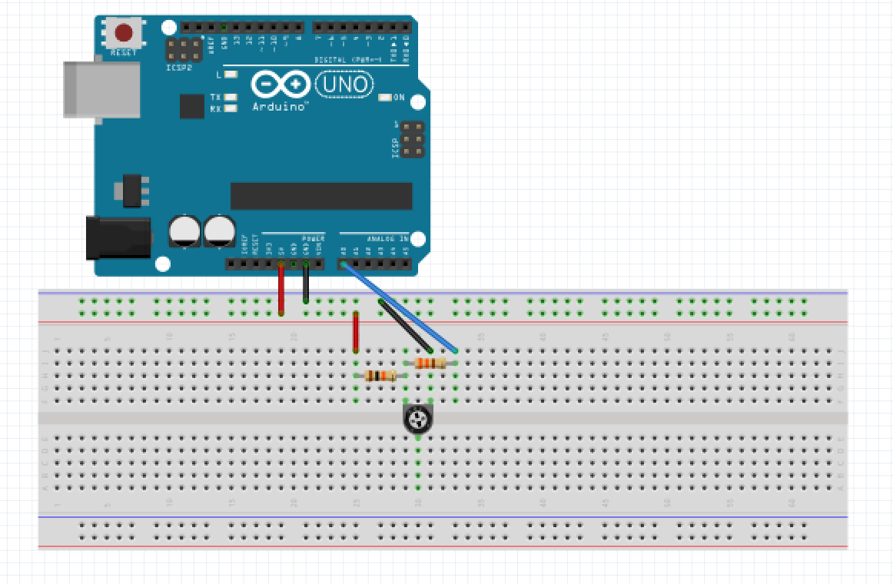
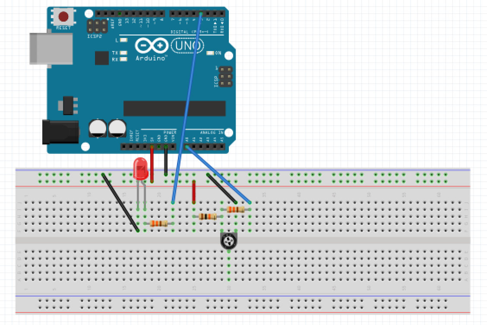

See where we currently are on the road to total robot domination.
Milestone 1
Follow Lines
Milestone 2
IDK What to Call this Yet
Milestone 3
?????
Milestone 4
Profit
Meet the Team
Daniel Weber
Junior, CS Major, ECE Minor.
Adam Wojciechowski
Junior, ECE and CS Double Major.
Shivansh Gupta
Junior, ECE Major, CS Minor.
Vignesh Nandakumar
Junior, ECE Major, CS Minor.
Team Contract
ECE 3400, Semester FA18 Team 11
Team Members: Daniel Weber, Adam Wojciechowski, Shivansh Gupta, Vignesh Nandakumar
Team Procedures
Team meetings will be in Upson Hall 142 on Fridays from 11:15 - 12:05
Slack will be the primary mode of communication
Decisions will be made by consensus
We will rotate meeting roles every week based on who the team leader is that week.
We will have a record keeper, agenda setter, and a meeting coordinator. The agenda
will be written and disseminated over Slack the night before the team meeting
The record keeper will rotate every meeting. They will type the minutes during the
meeting and disseminate them via Slack afterwards
Team Expectations
Work Quality:
Project standards (What is a realistic level of quality for team presentations,
collaborative writing, individual research, preparation of drafts, peer reviews, etc.?):
Information quality will be prioritized over visual quality for team meeting presentations.
Every document uploaded to the website will be reviewed by every member of the team to ensure
high quality. If a member chooses to do any individual research, their findings should be
reported to the rest of the group if it could be of use to others.
Strategies to Fulfill These Standards
Team Participation:
Strategies to ensure cooperation and equal distribution of tasks:
The team leader will be in charge of distributing tasks to the rest of the team
If there are any issues with team cooperation, the team leader will step in to resolve the conflict
Strategies for encouraging/including ideas from all team members (team maintenance):
During meetings, we have brainstorming sessions. Every team member will be expected to provide at least one idea.
The member in charge of the minutes will document every idea mentioned to make sure all ideas are acknowledged.
If multiple ideas are presented for the same problem, the team will delegate and reach a consensus.
Strategies for keeping on task (task maintenance):
There will be milestones assigned for every task that have their own deadlines to help team members stay on target.
The team leader will be in charge of communicating with the rest of the team and making sure everyone is meeting their deadlines
Preferences for leadership (informal, formal, individual, shared):
The leadership roles will be individual, but not permanent. The roles will change after every major milestone in the project.
Personal Accountability:
Expected individual attendance, punctuality, and participation at all team meetings:
Every member is expected to attend every team meeting. If a member is unable to attend, they must let the team know at least 24 hours before the meeting, barring extreme circumstances
Every member is expected to be punctual. Try to show up at least 5 minutes before the meeting starts. If a team member knows they will be late, let the rest of the team know at least an hour before the meeting.
Expected level of responsibility for fulfilling team assignments, timelines, and deadlines:
Every team member should be primarily responsible for the tasks given to them. If someone needs additional help, they can ask other members.
Every team member will be responsible for meeting their deadlines. This is important because other team members may be dependent on the completion of your tasks.
Expected level of communication with other team members:
If a question is addressed to the entire team that requires everyone to answer, team members should try to answer within 4 hours.
When a task is completed, the team member in charge of that task should notify the rest of the team and, if applicable, make their work available to the rest of the team.
Expected level of commitment to team decisions and tasks:
If there is a decision that affects the entire team, everyone on the team should know about it and will be allowed to have a say.
Tasks will be evenly distributed between team members.
Every team member is expected to contribute 6-10 hours per week to the project. This will most likely go up near the end of the semester.
Consequences for Failing to Follow Procedures and Fulfill Expectations
Describe, as a group, you would handle infractions of any of the obligations of this team contract:
For the first infraction, the team member will receive a warning from the team leader. The team member in violation must acknowledge that they violated the team contract.
For the second infraction, the team member will be publicly shamed on the website.
Describe what your team will do if the infractions continue:
If infractions continue (member misses 3 meetings without excuse, fails to complete their tasks, etc.), the team member in violation will be removed from the website.
Team Leadership
Every person on the team will have to take the role as a leader. The role of the leader will be to organize meetings and make sure that everything is submitted in a timely manner.
Please note here who will be responsible when:
Week 1-4 (Start-up, Lab 1, Milestone 1): Shivansh
Week 5-8 (Lab 2, Lab 3, Milestone 2): Vignesh
Week 9-12 (Lab 4, Milestone 3): Adam
Week 13-16 (Milestone 4, competition, final report): Daniel
I participated in formulating the standards, roles, and procedures as stated in this contract.
I understand that I am obligated to abide by these terms and conditions.
I understand that if I do not abide by these terms and conditions, I will suffer the consequences as stated in this contract.
Adam Wojciechowski date: 8/31/2018
Vignesh Nandakumar date: 8/31/2018
Shivansh Gupta date: 8/31/2018
Daniel Weber date: 8/31/2018
Lab 1: Microcontrollers
In Lab 1, we had to construct several simple circuits using multiple external components
and the Arduino Uno microcontroller. With the Arduino microcontroller and the Arduino IDE,
we constructed several simple Arduino programs, which culminated with us building our first
robot and having it drive autonomously in a figure eight pattern.
Task 1 - Blinking the Internal LED:
The first task was to use the arduino to blink an internal LED. The on-chip LED is
hard-wired to pin 13 which we set up as an ouput using the following code:
We then turned the LED on and off by setting it to high and low respectively:
void loop() {
digitalWrite(PIN_NUMBER, HIGH);
delay(1000); // waits for a second
digitalWrite(PIN_NUMBER, LOW);
delay(1000);
}
Task 2 - Blinking an External LED:
Our next task was to modify the code for task one to blink an external LED. We did this by
connecting an external LED to a digital pin through a resistor as shown in the diagram below:
All we did in the code for this task was to change our Pin Number from the on-chip LED to
the pin that we connected to the external LED:
#define PIN_NUMBER 0
The resistor was used to prevent sourcing too much current through the pin in case of a short
circuit, which would burn out both the Arduino and the external LED.
Task 3 - Reading an Analog Input:
Our third task was to detect changes in the resistance value of a potentiometer through an analog
input pin and print the value to the serial monitor. This was accomplished by setting up a voltage
divider circuit as shown below and connection the output of the circuit to an analog pin:

We then used the following code to set A0 as our analog pin and setup the serial monitor:
int potIPT = A0;
void setup() {
Serial.begin(9600);
}
Using the analogRead function, we were able to read the voltage value from the analog pin and output
that value to the serial monitor every half second:
void loop() {
int val = analogRead(potIPT); // read the input
Serial.println(val); // print to serial monitor
delay(500); // wait half a second
}
Task 4 - Outputting an Analog Signal
Combining the setups of Tasks 2 & 3, we designed the following circuit which allowed us to
use the analog signal input from the potentiometer to control the brightness of the external LED:

The LED could only be connected to one of the 6 digital pins which could output a PWN signal,
which was required to simulate the effect of an analog voltage. The digital pin was set up as
an output exactly as in Tasks 1 & 2. Inside the loop, we used the analogWrite function to output
the analog voltage to the digital pin:
void loop() {
int val = analogRead(potIPT); // read the input pin
analogWrite(PIN_NUMBER, map(val, 0, 1023, 0, 255));
}
The 10-bit ADC (Analog-to-Digital Converter) is able to input analog values from 0 to 1023, however
the LED is only able to input voltage values from 0 to 255, so we used the map function to make sure
that we didnt exceed the voltage limits of the LED.
Task 5 - Controlling Parallax Servos:
Our final task before assembling our robot was to use the PWM signal we generated in the previous task
to drive and control a Parallax Continuous Rotation Servo. We did this using the Arduino Servo.h library.
First we set up the servo and the serial monitor.
#include <Servo.h>
#define PIN_NUMBER 3
Servo myservo; // create servo object to control a servo
int potIPT = A0;
void setup() {
myservo.attach(PIN_NUMBER);
Serial.begin(9600);
}
We then output the analog voltage of the potentiometer setup through the digital pin, as in Task 4,
to control the speed and direction of the servo, with the only difference being that the range of voltage
values for the servo was from 0 to 180 instead of 0 to 255.
Task 6 - Assembling the Robot:
The parts we used to assemble our robot were:
2 Servos
2 Servo Mounts
2 Wheels
1 Baseplate
11 Screws
11 nuts
1 Ball Bearing Wheel
1 Arduino
1 Rechargeable Battery Pack
The first thing we did was mount the servos to the servo mounts. As there was a shortage of screws and nuts
in the lab, we only used two screws per servo instead of the four there are room for. The robot built in this
lab will not be the same as the final robot, so we just needed enough screws to maintain structural integrity.
The servos were then mounted to the baseplate, using two screws per mount.
The wheels were then mounted to the servos. As one of our servos did not have a screw, we used wheels that fit
snug on the servos. This is an issue that we will need to fix when designing later robots.
Next, we mounted the Arduino on top of the baseplate using two screws.
Finally, we attached the ball bearing wheel to the front of the robot.
Task 7 - Driving the Robot Autonomously:
Once the robot was built, we wrote code for the robot to autonomously drive in a figure eight pattern. The 2
servos and digital output pins were set up as in the previous tasks and connected using the attach function:
To control the movements of the robot, we had 3 basic functions: moveForward, moveRight, and moveLeft. The
moveForward function worked by turning both wheels in the same direction at the same speed. The moveRight function
worked by turning the left wheel forward while at the same time turning the right wheel backwards in order to pivot
the robot and make it turn right. The moveLeft function worked in the same way but with the directions reversed.
The first time we tested the robot, it became apparent that one of our servos was spinning much faster than the other;
so much faster that the robot was practically impossible to control.
We performed a series of tasks in order to identify the problem. First, we swapped the pins for our two servos. This
would check to see if the issue was in the software rather than in the hardware. After switching the pins had no effect,
we decided to try a third servo. The third servo was much closer to the speed we were expecting, so we switched out the
super fast servo. After this switch, we were able to get out robot to drive in straight lines and in a proper figure eight pattern.